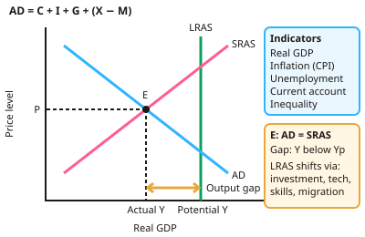

A-level Economics Year 12 · Topic 2
Macroeconomics
Macroeconomics studies the economy as a whole: growth, jobs, prices and trade.
We will learn how economic performance is measured, including GDP, inflation, unemployment, the balance of payments and inequality.
We will also introduce aggregate demand and supply, and the main policies the government uses to manage the economy.
- 8 subtopics
- 285 questions
- Free: 2.1 notes and 6 questions
In this topic
- 2.1Measuring performance and AD/ASFree below · 13 questions
- 2.2Economic policyOpen in Full Marks · 11 questions
- 2.3Macroeconomic objectives and indicators of economic performanceOpen in Full Marks · 58 questions
- 2.4Measuring economic growth: GDP, GNI, real vs nominal, per capita and PPPOpen in Full Marks · 28 questions
- 2.5Measuring inflation: CPI, RPI, price indices, weights and limitationsOpen in Full Marks · 53 questions
- 2.6Measuring employment and unemployment: claimant count, Labour Force Survey and inactivityOpen in Full Marks · 60 questions
- 2.7The balance of payments and the current accountOpen in Full Marks · 29 questions
- 2.8Measuring income and wealth distribution: Lorenz curve, Gini coefficient and povertyOpen in Full Marks · 33 questions
2.1 · Free notes
Measuring performance and AD/AS

Key points
- Key indicators: real GDP and GDP per capita, inflation (CPI), unemployment, the balance of payments on the current account, and measures of inequality and wellbeing.
- Aggregate demand = C + I + G + (X − M); the AD curve slopes downwards.
- Aggregate supply: short-run AS shifts with costs; long-run AS reflects productive capacity, shifted by investment, technology, skills and migration.
- Macroeconomic equilibrium occurs where AD meets AS; an output gap arises when actual output differs from potential.
- The multiplier magnifies the effect of an initial injection; the accelerator links investment to changes in output.
- Inflation causes: demand-pull, cost-push and monetary growth. Effects include reduced purchasing power, uncertainty and international competitiveness effects.
In more detail
- Worked AD: C £1,400bn + I £400bn + G £500bn + (X £800bn − M £850bn) = AD of £2,250bn.
- Worked output gap: actual GDP £2,180bn and potential GDP £2,250bn → a negative output gap of £70bn, about −3.1% of potential.
- Multiplier formula: in a simple closed economy, k = 1 ÷ (1 − MPC), so an MPC of 0.8 gives k = 5. Taxes and imports make the real UK multiplier much smaller.
- Exam tip: on an AD/AS diagram, say whether AD or SRAS shifts, and explain the effect on both real GDP and the price level.
Practice
Measuring performance and AD/AS: 6 questions
Pick an answer to check it, or open the answer for the explanation.
1. Aggregate demand equals:
- C + I + G + (X − M)
- C + S + T
- Wages + profits
- GDP ÷ population
Show answer
A: C + I + G + (X − M). Consumption, investment, government spending and net exports.
2. A negative output gap means:
- Actual output is above potential
- Actual output is below potential, with spare capacity
- Inflation is high
- Exports exceed imports
Show answer
B: Actual output is below potential, with spare capacity. This is typically associated with higher unemployment.
3. Demand-pull inflation is caused by:
- Rising costs of production
- Excessive aggregate demand relative to supply
- Falling wages
- Cheaper imports
Show answer
B: Excessive aggregate demand relative to supply. AD grows faster than the economy's capacity.
4. What does the multiplier effect describe?
- A fall in GDP
- An initial injection leading to a larger eventual change in national income
- A rise in interest rates
- A trade deficit
Show answer
B: An initial injection leading to a larger eventual change in national income. The size depends on leakages such as savings, tax and imports.
5. Which shifts long-run aggregate supply to the right?
- Higher wage costs
- Investment in technology and skills
- Higher taxes on firms
- Reduced labour force
Show answer
B: Investment in technology and skills. LRAS reflects the economy's productive capacity.
6. What is the accelerator effect concerned with?
- Prices rising quickly
- The relationship between the rate of change of output and the level of investment
- Interest rate changes
- Exchange rate movements
Show answer
B: The relationship between the rate of change of output and the level of investment. Small changes in output can trigger larger changes in investment.
Keep going in Full Marks
Full Marks has 13 questions on Measuring performance and AD/AS (7 more than here), set out in practice levels. You also get notes and 3D models for all 8 subtopics of Macroeconomics, plus games, timed exams and past papers.
On your exam board
- AQATopic 6: The measurement of macroeconomic performance, Topic 9: Macroeconomic policy
- OCRTopic 2.1: Economic policy objectives and indicators, Topic 2.3: Application of policy instruments
- EdexcelTopic 2.1: Measures of economic performance, Topic 2.6: Macroeconomic objectives and policies
- CambridgeTopic 3: Government microeconomic intervention, Topic 4: The macroeconomy, Topic 5: Government macroeconomic intervention, Topic 6: International economic issues